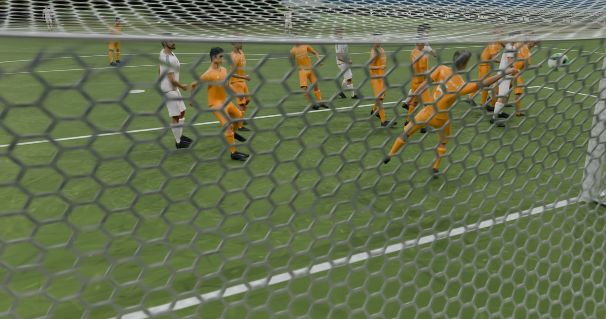
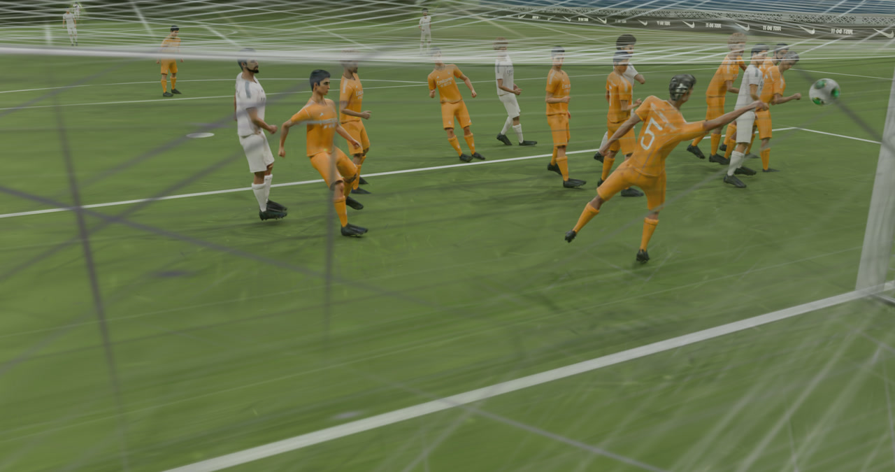

We propose DENSER, a Depth-guided ENSemble with Staged EFA-GS Reconstruction for soccer novel view synthesis. DENSER extends EFA-GS with three key contributions: (1) camera-height-based loss weighting that prioritises ground-level broadcast views, (2) monocular depth supervision from Depth-Anything-V2 to regularise geometry in textureless regions, and (3) a three-model pixel-average ensemble whose members diverge from a shared base checkpoint by varying training length and Gaussian scale clamping. On five held-out challenge scenes we achieve a mean PSNR of 29.89 dB, SSIM of 0.791, and LPIPS of 0.366.
29.89
PSNR (dB)
0.791
SSIM
0.366
LPIPS
Baseline (left) vs DENSER ours (right). Select a scene, camera, and baseline to compare. Drag the divider.


Mean across all 5 challenge scenes on evaluation cameras.
| Method | PSNR ↑ | SSIM ↑ | LPIPS ↓ |
|---|---|---|---|
| 3DGS baseline | 26.74 | 0.750 | 0.410 |
| Triangle Splat baseline | 26.43 | 0.757 | 0.359 |
| DENSER — Scene 1 | 30.016 | 0.7819 | 0.3976 |
| DENSER — Scene 2 | 29.742 | 0.8028 | 0.3476 |
| DENSER — Scene 3 | 29.821 | 0.7866 | 0.3359 |
| DENSER — Scene 4 | 29.514 | 0.8095 | 0.3591 |
| DENSER — Scene 5 | 30.334 | 0.7747 | 0.3878 |
| DENSER Mean (Ours) ★ | 29.885 | 0.7911 | 0.3656 |
Baseline numbers provided by challenge organisers. DENSER improves mean PSNR by +3.15 dB over 3DGS and +3.46 dB over Triangle Splat.
Citation will be available upon publication.